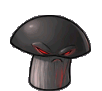
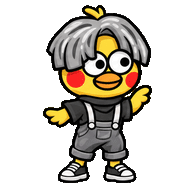
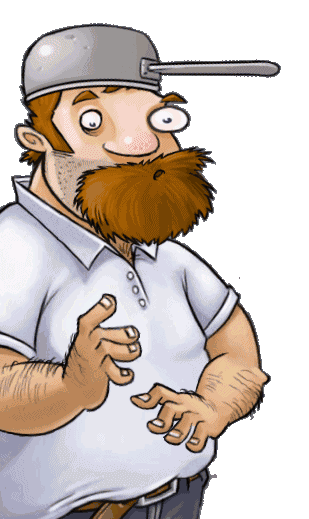
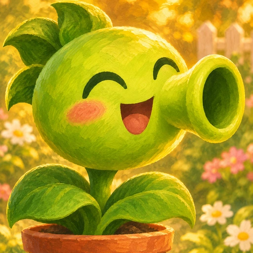

后院联赛 · 1 对 1
算好角度，借风一击
击倒华强队，或把对手轰进深坑。
掌握普通、火焰、寒冰与地雷弹药，能够飞行、附魔并释放末日菇。
buggggggggg,用它过关是开了吧。
为受伤植物提供生机补给，也是后院联赛的重要支援者。

满怒后选中绝技，调整角度和蓄力再发射。末日菇落地后会炸出一个大坑。
消耗体力为猫尾草提供50点护盾，优先吸收来袭伤害。
命中后让目标跳过一次行动，随后冰层融化。寒冰菇仍可冻结两次行动。
抬手蓄势，甩出水果刀，再收手站稳。刀锋沿抛物线飞向目标。
路易十六羡慕的能力，发射自己的头颅，命中后吸取生命并返回身体。
持续飞向植物，进入爆炸范围后蓄爆，伤害你猜。
边运球边跳舞，并从地下召唤最多四名小鸡伴舞。

小鸡分身踩着节拍跳舞，轮到它时会转身投出篮球，命中后击退植物。
报纸破碎后暴怒，随机发动冰车、爆炸坚果与小推车攻击。

疯狂戴夫特别鸣谢微信：18738748728，邮箱：2192341537@qq.com，想要参与此公益游戏制作或者有奇思妙想的的欢迎联系。
感谢 PopCap Games 的经典作品，以及素材整理、动画归档与音效收集者。
协助完成前端实现、游戏逻辑、界面整合与自动化验证。
本项目为非商业展示与玩法原型，相关角色、音乐与图像版权归原权利方所有。
戴夫还在等你保住他的脑子。
重置进度：清除通关进度，重新从第一关开始。
解锁所有关卡：开放全部六关，保留已有通关进度。

晴日后院